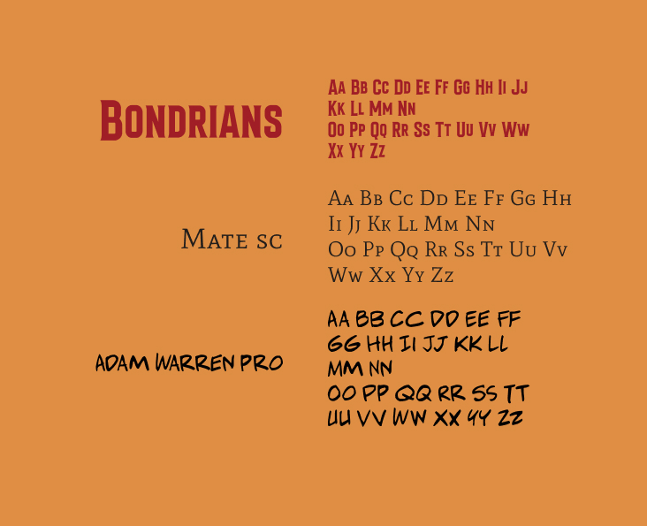

"The Hateful Eight" a Webcomic
Project created as part of the Multimedia Communication course in the Design and Multimedia Degree program at the University of Coimbra
Project carried out in the third year of university in the second semester in a group of three people. The aim of the project was to create an interactive website inspired by a work (books, films, series, etc.). For our project, we chose the film “The Hateful Eight” directed by Quentin Tarantino. Based on this, we decided to create an interactive webcomic for which we also had to create a trailer. In order to make this feasible in the time we were given, we had to summarize the work into key moments and then create a cohesive narrative. After all the planning, ideation and storyboarding, I was responsible for creating half of the illustrations for the interactive comic and editing the trailer.
Click here to access the webcomic


